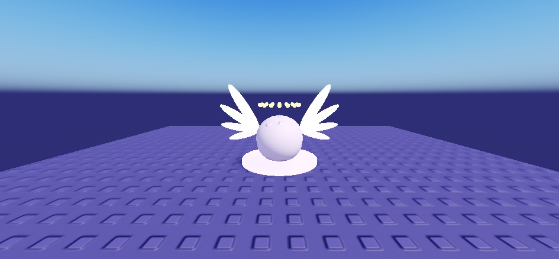

Les nouvelles auras (une signature par rareté), filmées dans Studio le 22/10 sur des œufs de test, en plein jour. Dans le jeu, elles s'affichent sur les vrais œufs de chaque espèce.
Les 10 raretés, de gauche à droite : Commun, Peu commun, Rare, Épique, Légendaire, Mythique, Divin, Céleste, Cosmique, Secret (première version : feuilles, rayons et ailes corrigés ensuite).Après correction : feuilles qui tombent (Peu commun), rayons dorés (Légendaire), Divin.

Divin, de près : les deux ailes de lumière (elles battent en jeu) et l'auréole.